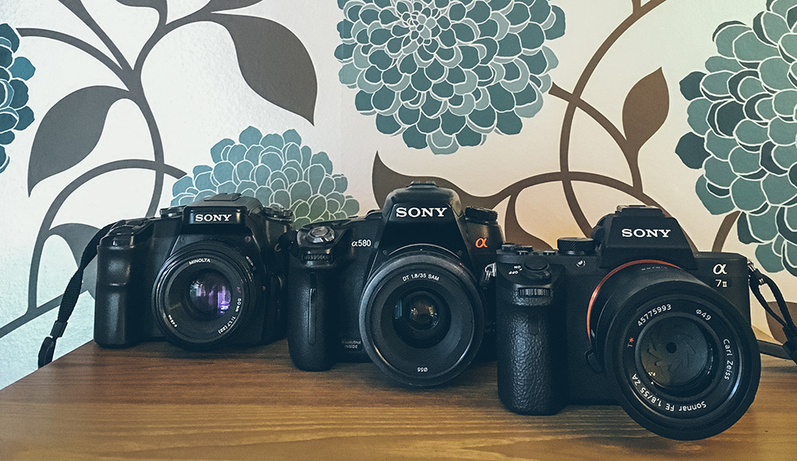
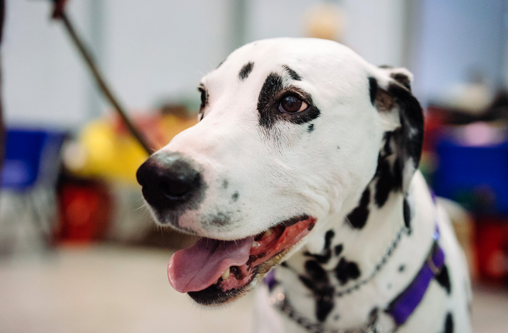
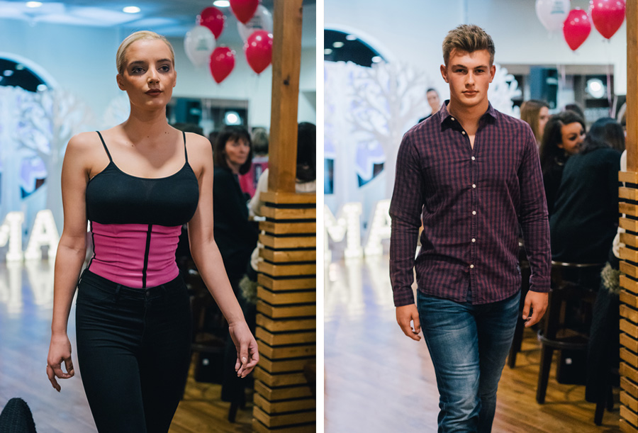
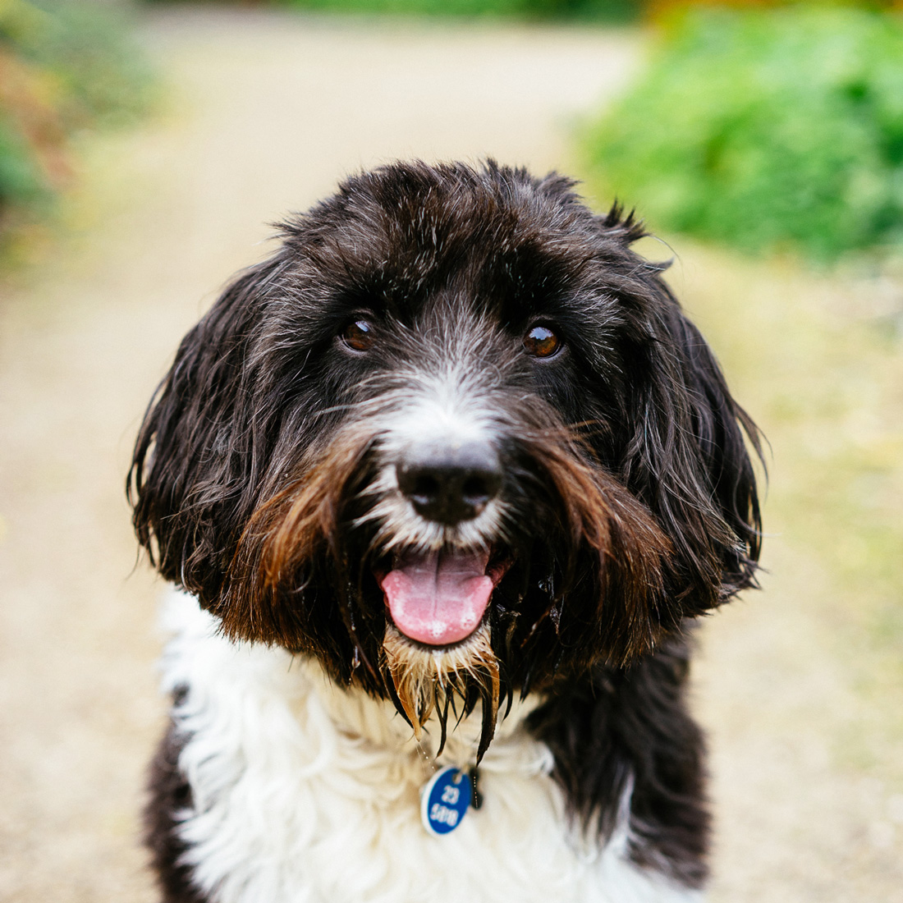
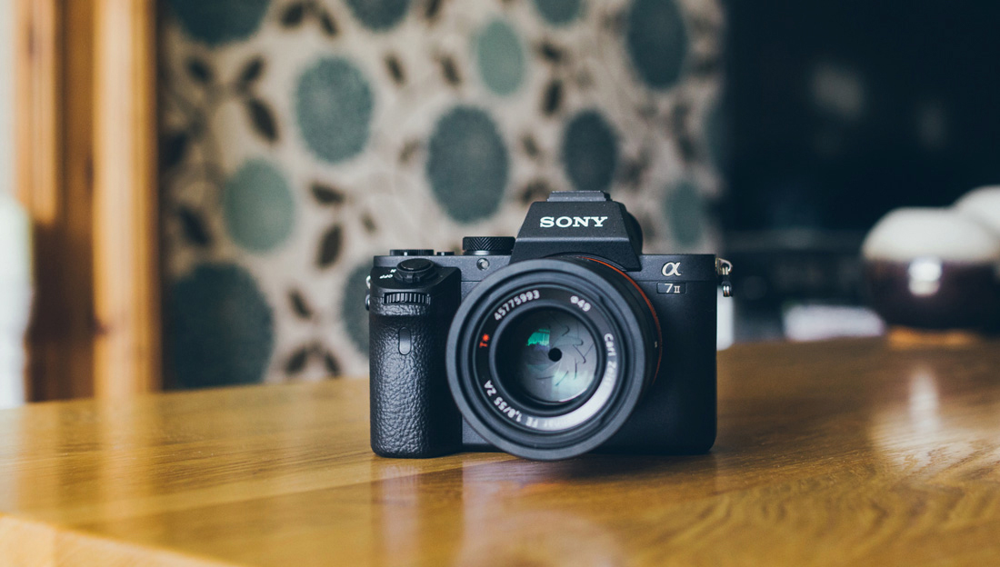

So, I’ve finally made the jump to full-frame photography as a few weeks ago I treated myself to the Sony A7ii after lusting after it for months. Since I’ve had it for a few weeks now and used it for various photoshoots, I thought I’d share some of my thoughts on this camera.
Before making the jump, I’d been using my Sony a580, a crop-sensor DSLR. In fact, the A7ii is now the 3rd Sony camera in my kit, which also includes my old (entry-level DSLR), the Sony a100.
 My camera family - the Sony a100, the Sony a58- and the Sony a7ii
Full-frame Mirrorless Compact-System Camera
There are two main differences between my Sony A580 and my new Sony a7ii. One of which is that the A7ii is mirrorless compact-system camera, so works a little differently from a conventional DSLR. A traditional SLR camera will flip a mirror inside the body out of the way when it takes a photo, to let the light hit the sensor. However, the only barrier to light between the lens and the sensor on a mirrorless camera is the shutter curtain.
This means that the camera uses an electronic viewfinder (instead of the traditional optical viewfinder) which allows you to check exposure as you’re taking the photo and avoids viewfinder black-out during shooting. Of course, this took a little getting used to, but being able to check my settings are ok while I shoot has been pretty useful.
The other main difference is that the A7ii is full-frame, whereas my A580 was an APS-C crop sensor camera. Without going too much into what this means, the main difference is that a full-frame camera’s sensor has a wider field of view, over the “cropped” view a crop sensor has. This means a 35mm lens will show a lot more of the scene when on a full-frame camera, compared to a crop-sensor camera. There’s pros and cons for each, but I’ll go into that later!
My Gear
Along with the camera, I bought the Sony 55mm f/1.8 lens from Jessops in Belfast. I love shooting with my 35mm prime lens on my A580, so I was after a lens with a focal length of around 50mm for my new full-frame camera, as this would give a similar field of view.
The Sony 55mm f/1.8 is pretty amazing and produces so super sharp images with awesome bokeh! It’s definitely a lens you’ll want to nab if you’re shooting with a camera from the Sony A7 range. A few weeks later I bought the Sony 28mm f/2 to give me the option of shooting a bit wider. For £360 it’s a bit of a bargain as it’s a great lens, though with many wide lenses, there is some distortion when shooting RAW, though it is fixable. I read an interesting blog post about this lens that swayed me to buy it.
It’s also worth noting that while the A7ii is more advantageous for the majority of shooting situations, my crop-sensor Sony a580 will still be my go-to camera for things like shooting animals at the zoo. This is because my Sigma 70-200mm telephoto lens will have longer reach on a crop sensor, so I can get closer to my subject. I’ve found it’s also been useful to have two good cameras on the go for busy shooting situations like a wedding.
 My new Sony a7ii paired with the Sony 55mm f/1.8 lens
My new Sony a7ii paired with the Sony 55mm f/1.8 lens
The Nitty Gritty
I’ve had this camera for about 5 weeks now and used it in various shooting conditions, so I’ve been able to test it quite thoroughly.
Low Light and High ISO
One of the primary reasons I wanted this full-frame camera was its good reputation for dealing with low-light scenes as I’m an avid natural light shooter and only use flash when necessary. I brought my new A7ii along to a dog show held inside a hall at Balmoral Park, where it was fairly dark and I still wanted some great photos of the lovely dogs I met.
I was able to use ISO 5000 quite comfortably, as there wasn’t much visible noise. However my images did start becoming quite grainy when I used IS0 6400. Since I avoid using ISOs higher than 1600 on my previous DSLR, this is pretty good going.
 Being able to happily shoot at ISO 5000 at the dog show - win
I also tested the auto-ISO feature, which allows you to set your aperture and shutter speed and it will choose a suitable ISO setting. While it works, it’s not afraid of choosing really high ISOs, higher than what I’d be comfortable with using, so I’d refrain from using this feature in low-lit scenes.
Autofocus
The Sony A7ii’s AF is fast and it’s sharp, and it didn’t let me down during a recent event I worked at. I was asked to cover the Autumn Fashion Show for the Main Street My Street campaign, held inside Bob & Bert’s cafe in Bangor. I switched to AF-C (continuous focus) had no problem with keeping the models in focus as they walked toward me.
 Shooting models walking the catwalk with continuous autofocus
The only real issue I’ve had with the autofocus on my A7ii is being able to pin-point the focus on the eyes of animals. I noticed this when taking photos of my little dog Matisse. I like using wide aperture to capture shots with low depth of field, but it this often means I miss the eyes as the focus is on the nose or eyebrow of my dog. While there is an “Eye AF” mode specially designed to focus on eyes, it seems to just work on humans. I can of course move the little focusing box around the screen to the eye, but I don’t always have time do this when shooting a hyper-active dog!
 The AF doesn’t always pinpoint Matisse’s eyes, but when it does, it’s sharp!
Manual Focus
On most occasions, I rely heavily on my camera’s AF, but in some circumstances you need to switch to manual. The A7iii has made manual focusing a lot easier with it’s “focus peaking” feature. When you turn this feature on and begin turning the focus wheel, you’ll see an area of the scene “sparkle” with a coloured glow showing up on the area in focus. This makes it a lot easier to get your manual focus spot on, see it in action in this video.
Custom Buttons
There’s a few more features the Sony A7ii has that really enhance its user experience. This includes the custom button settings on the camera that allow you to choose functions (out of an array of choices) for various buttons.
Commonly used functions and settings can be accessed quickly, like switching focus mode or area, setting monitor brightness and turning on SteadyShot.
Wifi Sharing
The camera has it’s own in-built wifi, so you can send images (including RAWs) straight to your phone using the Sony PlayMemories app. I like this feature as it lets me share a photo or two from a shoot before I’m home to upload them to my computer.
 I love the design of the Sony A7ii, it’s pretty cute for a camera, right?
TL;DR
To sum up, the Sony A7ii is a very impressive camera and after only a few weeks I feel like it will aid me in becoming a better, more confident photographer. I’ve listed a few of my personal pros and cons for purchasing this camera.
Pros
- Full-frame quality in a cute little package, this camera is tiny compared to other full frame DSLRs
- The autofocus is fast and reliable
- The focus peaking feature makes manual focus a lot easier
- I love its gorgeous design which pays homage to the vintage SLRS
- Pixels aren’t everything but it’s great having an extra 50% more (compared to my Sony a580)
- The electronic viewfinder is great for ensuring your shot is exposed well as it allows you to preview the settings while composing the shot
- Awesome low light ability and getting usable shots at high ISO ranges is great
- Using the custom buttons to quickly access your commonly used functions is handy
- Wifi in-built for sending photos to my iPhone
- Paired with Sony 55mm f/1.8 it’s amazing!
{kind=link}
Cons
- Photography is an expensive hobby but even more so when you start buying full-frame lenses
- I’m starting from scratch again gear-wise as my current Sony Alpha gear is incompatible with the Sony A7ii
- It’s hard to pinpoint the autofocus on a small area (like my dog’s eyes)
- As with most mirrorless cameras, the battery life isn’t great. I had to buy two extra batteries. (The Ex-Pro batteries are a good, cheaper alternative to the Sony branded ones)
- There’s no battery cradle provided when you buy the camera (why so stingy Sony?!) so you have to charge batteries through the camera itself
As you can see, the benefits definitely outweigh the disadvantages, so if you’re thinking of upgrading your camera system, I’d highly recommend the Sony A7ii.
If you’re thinking about picking up a Sony A7ii yourself, feel free to email me or leave a comment if you have any questions about this camera :)
Share on Twitter